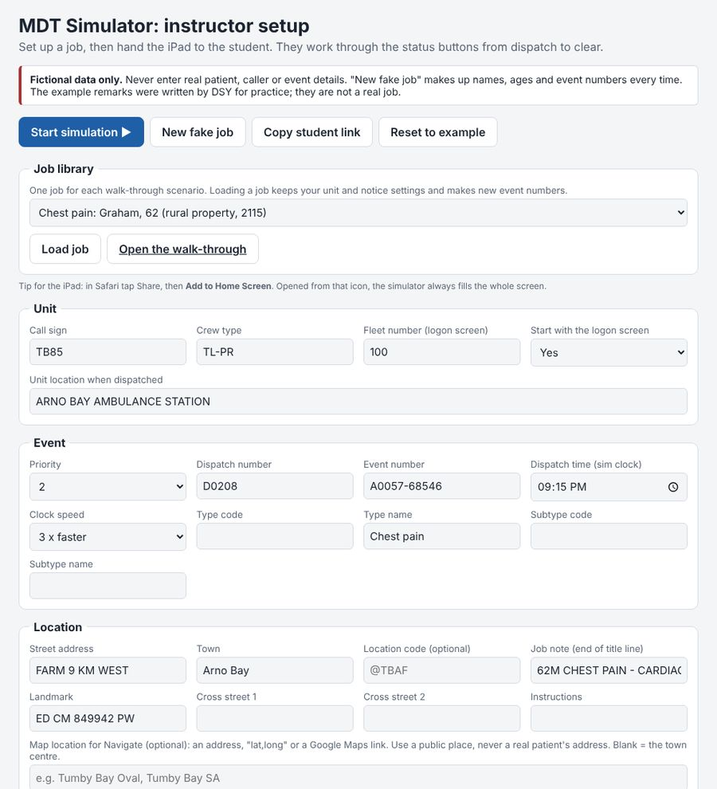
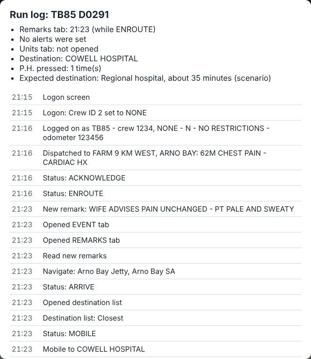
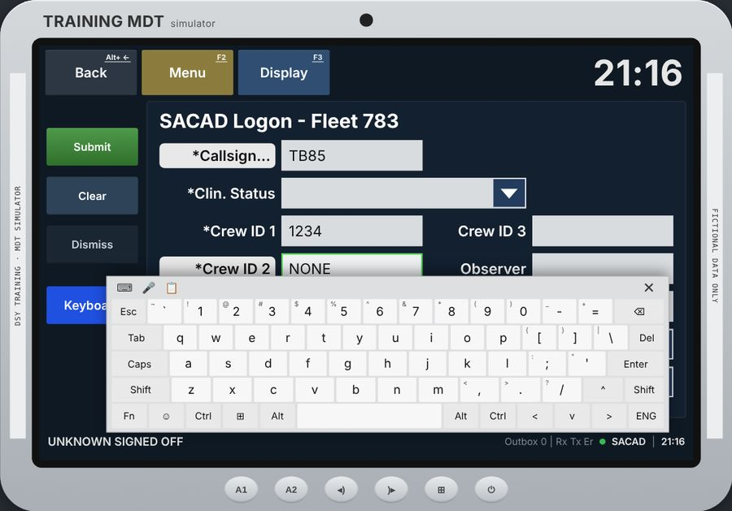
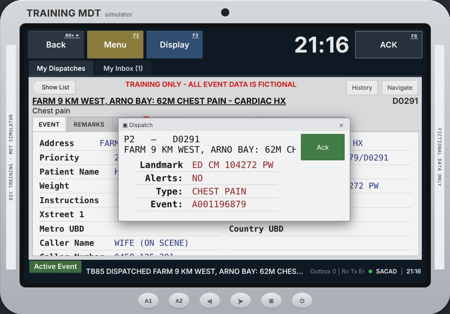
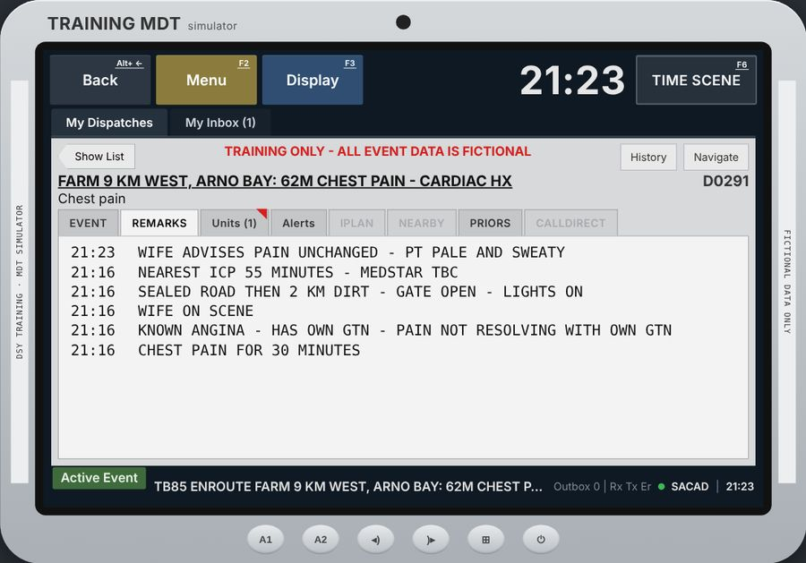
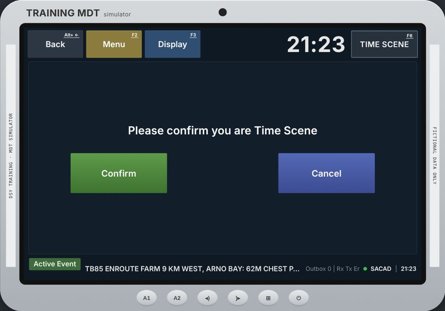
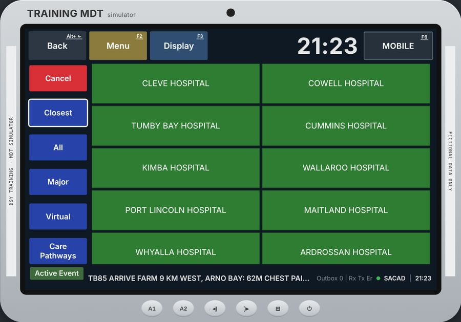
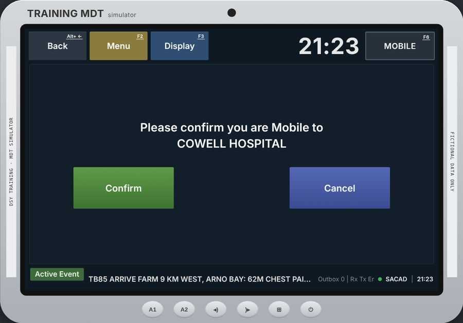
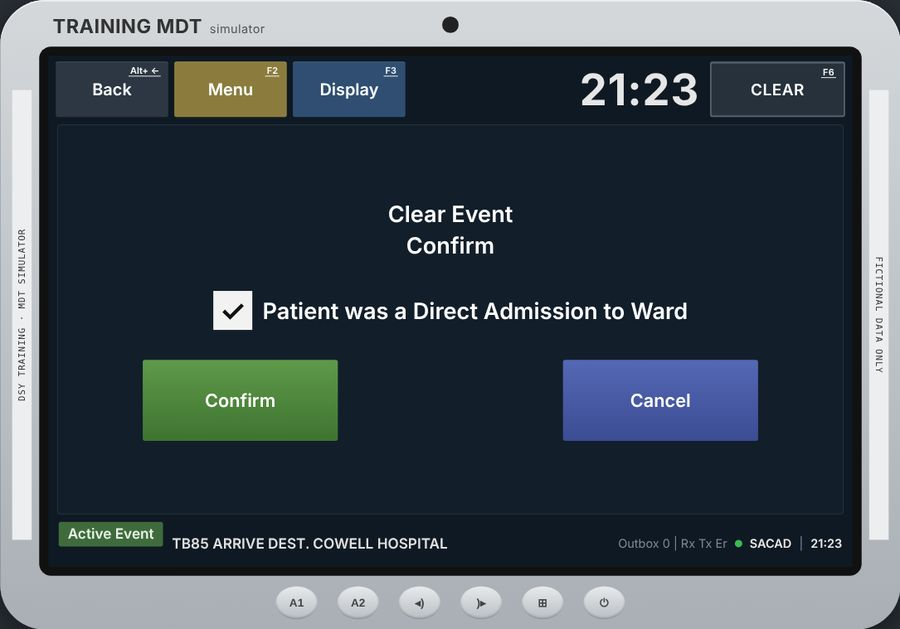

Part 1 Instructors
1. Setting up the iPad
The simulator runs in Safari on an iPad held landscape. Nothing to install.
In a normal Safari tab, pressing Start simulation goes full screen where Safari allows it. There is also a Full screen button in the grey bar above the device. Tap the small ✕ in the corner to leave full screen.
2. Setting up a job

Three ways to fill in a job
- Job library: pick a job (one for each walk-through scenario, such as "Chest pain: Graham, 62") and tap Load job. Your call sign, crew type and red notice stay as you set them; the event numbers are new each time. Open the walk-through opens the matching facilitator version.
- From the main page: on Run a session, each topic has Load the MDT job.
- From the scenario customiser: after changing names, town, station and times, tap Open in MDT simulator. The job arrives with your details and a note asking you to check them.
You can change any field afterwards. New fake job swaps in new made-up names, ages and numbers; Reset to example goes back to the practice job.
Saving a job for later
Set up a job the way you want it, then tap Save this job… and give it a name. It appears in Saved jobs: choose it and tap Load next time (new event numbers are made each time). Saved jobs stay on this iPad, in this browser or Home Screen icon. Delete removes one.
Queueing several jobs
- Load or set up a job and tap Add this job to the queue. Repeat for each job. Use ▲ to change the order and ✕ to remove one.
- Set up the first job on the screen (it is not part of the queue).
- Choose Next job after: a few seconds, or 2, 5 or 10 minutes on the simulator clock.
- Tap Start simulation.
When the crew clears a job, they show AVAILABLE, then the next job arrives as a new dispatch pop-up. They stay logged on, the clock keeps running, and the unit starts from the hospital it just cleared. The grey bar shows "Job 2 · 1 more queued". The run log has a summary for each job, and Restart job starts again from the first one.
The fields
| Unit | Call sign, crew type, fleet number (shown on the logon screen), where the unit is when paged, and whether to start with the logon screen. |
|---|---|
| Event | Priority, dispatch and event numbers, the dispatch time on the simulator clock, the clock speed, and the job type. |
| Location | Street, town, location code, the note at the end of the title line, landmark, cross streets and instructions. The town decides the "Closest" hospital list. |
| Map location | Optional. Where Navigate sends the crew before they go mobile: an address, "lat,long" or a Google Maps link. Use a public place, such as the training venue or the oval, never a real patient's address. Blank = the town centre. |
| Patient and caller | Name, age, weight, caller and number. All made up. |
| Destination | A booked destination shows as the top tile when the crew presses Mobile. Emergency jobs usually have none, so the crew chooses. The expected destination is for you only and appears in the run log. Tick hospitals on diversion to show them orange. |
3. Remarks, alerts and the clock
Remarks
One remark per line:
- Plain lines are what the call-taker typed: they get times between the call being received and dispatch.
- Lines starting
+3(or+2:30) arrive live that long after dispatch, while the crew is driving. For example+4 WIFE ADVISES PAIN UNCHANGED. - Lines starting with a time such as
13:09keep that time.
Each library job already has 2 or 3 live remarks (stable, worse, or access details). Edit them to make the patient worse sooner, or add your own.
Alerts
Anything typed in Alerts makes the Alerts tab show red until the crew opens it, and the dispatch pop-up shows "Alerts: Yes".
Clock speed
The simulator clock runs 3 times faster than real time by default, so a 3-minute en-route discussion covers 9 minutes of driving and the live remarks arrive. You can choose real time, 2 x, 3 x or 5 x. All times on the screen and in the run log follow the simulator clock.
The event tab shows Received and Dispatched times (to the second). For P1 and P2 they are within a minute of each other; for lower priorities, a few minutes apart.
4. Starting and handing over
- Tap Start simulation ▶. The device screen appears on the logon screen (or straight at the dispatch, if you switched the logon off).
- Hand the iPad to the crew.
The grey bar above the device has:
- Full screen on or off.
- Run log: what the crew has done so far (see section 5).
- Restart job: the same job again from the start.
- Instructor setup: back to the setup screen (it asks first).
5. The run log and debrief

The summary at the top shows:
- when the crew first opened the Remarks, Alerts and Units tabs, and what status they were on;
- whether a new live remark was never read;
- the hospital chosen, and the expected destination you set;
- how many times P.H. was pressed.
Below it, every action with its simulator time: logon, each status, each remark arriving and being read, Navigate, the hospital list and filter used, any cancelled confirmations, and Clear.
Part 2 Crews
6. Logging on

Fill in every field marked *, then tap Submit:
- Callsign (your instructor will tell you which).
- Clin. Status: choose N - No restrictions.
- Crew ID 1 and Crew ID 2. Single officer? Tap the shaded *Crew ID 2 button and it fills in NONE.
- Mobile and Odometer (any practice numbers).
Crew ID 3, Observer and Equipment are optional. Any empty * field turns red when you submit.
Typing
Tap the blue Keyboard button for the on-screen keyboard, or use a Bluetooth keyboard. Hold the grey bar along the top of the keyboard and drag to move it out of the way of the field you're filling in. Tab or Enter moves to the next field; ✕ or Esc closes the keyboard.
7. Reading the job

The job arrives as a Dispatch pop-up: priority, dispatch number, address, landmark, alerts and type. Tap Ack (or the ACK button top right).
The tabs
| EVENT | Address, priority, event number, patient, age, weight, landmark, cross streets, caller, and (scroll down) the Received and Dispatched times. |
|---|---|
| REMARKS | Everything the call-taker typed, newest at the top. A small red flag on the tab means a new remark has come in: open it. |
| Units | Your unit and any others on the job, with their status codes. |
| Alerts | Red until you open it when there's an alert. |
| PRIORS | Previous events at the address, if any. |

Keep checking the remarks while you drive: updates on the patient arrive on the way.
8. The status buttons
The button at the top right (F6) always shows the next status. The bar along the bottom shows your call sign and the last status sent.
| Button | What happens | Status sent | Code |
|---|---|---|---|
| ACK | Acknowledges the job | ACKNOWLEDGE | AK |
| ENROUTE | Straight away, no question | ENROUTE | ER |
| TIME SCENE | "Please confirm you are Time Scene": Confirm | ARRIVE | TS |
| MOBILE | Opens the hospital list (section 9) | MOBILE | TM |
| ARRIVE DEST | Straight away, no question | ARRIVE DEST. | TD |
| CLEAR | Clear Event Confirm (section 11) | AVAILABLE |

Back cancels a confirmation or the hospital list. Menu (F2) shows the main menu; History lists your status times.
9. Choosing the hospital

Pressing MOBILE opens the hospital list:
- A pale Booking tile at the top, if the job has a booked destination.
- Green tiles are open; orange tiles are on diversion (CONSULT ALL).
- Down the left: Closest (nearest first), All (A to Z), Major, Virtual and Care Pathways. Cancel goes back.
Tap a hospital, then Confirm "Please confirm you are Mobile to …". Check the name before you confirm.

11. Clearing the job

At the hospital, after ARRIVE DEST, press CLEAR. Tick Patient was a Direct Admission to Ward if that applies, then Confirm. The unit shows AVAILABLE and the main menu.
12. Common questions
Submit doesn't work on the logon screen
A field marked * is empty: it shows in red. Clin. Status has to be chosen from the list.
The keyboard is covering the field
Drag it by the grey bar along its top, or close it with ✕ and reopen it.
No live remarks came in
They arrive a few minutes (simulator time) after dispatch. If you press Time Scene straight away they arrive after you're on scene. Talk through your plan en route first.
The page isn't full screen
Tap Full screen above the device, or open it from the Home Screen icon (section 1).
I need to start again
Restart job above the device starts the same job from the dispatch (or the logon).
Something looks wrong after an update
Close Safari's tab (or the Home Screen icon) and open it again.